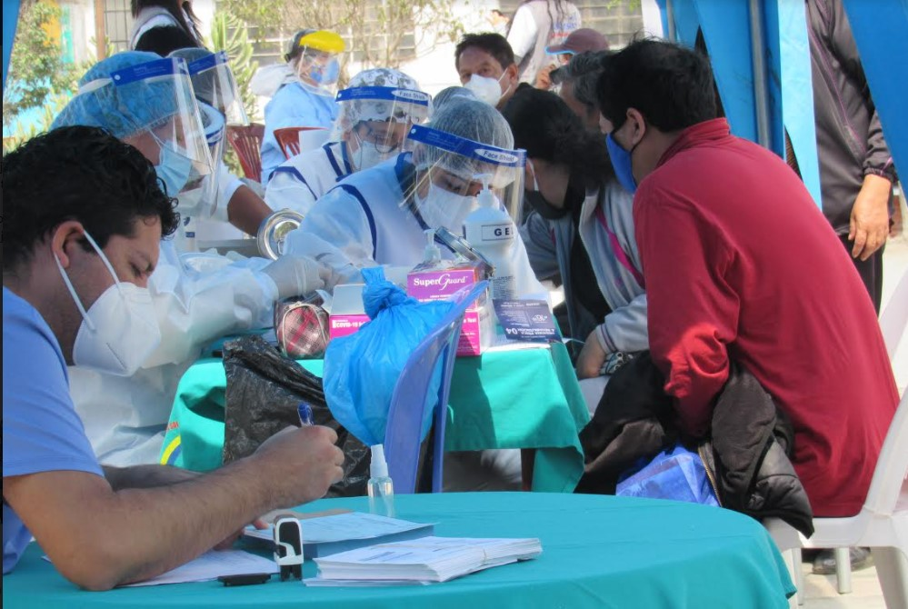
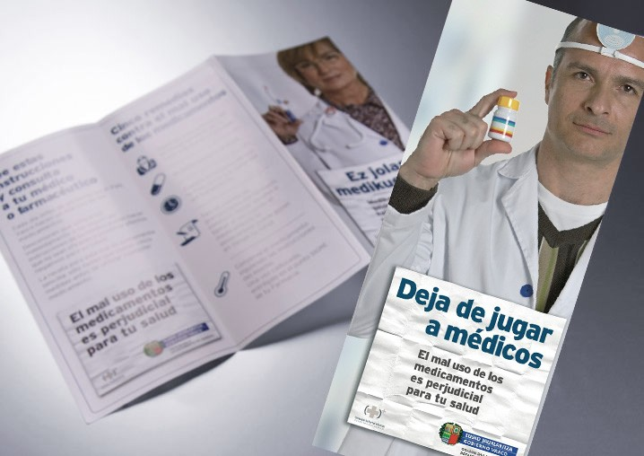
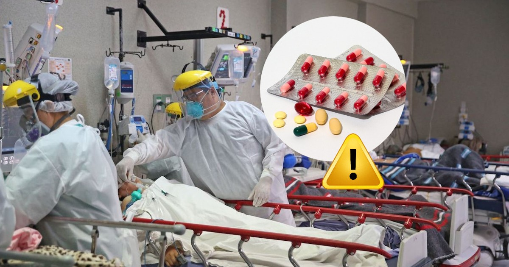

PELIGROS DE AUTOMEDICARSE
Existen muchos peligros como por ejemplo:

Intoxicación
Falta de efectividad
Adicción a medicamentos
Quienes somos
Somos una organizacion sin fines de lucro que busca guiar a las personas en el buen camino de la medicacion , de esta forma evitamos que se automediquen y pongan sus vidas en peligro . Nuestro grupo lo forma medicos , enfermeros y personas voluntarias que quieran apoyar con la causa de construir un mundo mas sano.
COMO AYUDAMOS
¡ Algo simple y sencillo puede salvar tu vida !
- Todos
- Charlas Virtuales
- Ayuda médica
- Informacion variada
Llamanos si tienes consultas médicas
A donde recurrir cuando estas enfermo

Algunas consultas médicas presenciales
Casos reales del victimas
Que medicamentos no consumir
Como tratarte correctamente

Gran variedad de folletos virtuales
